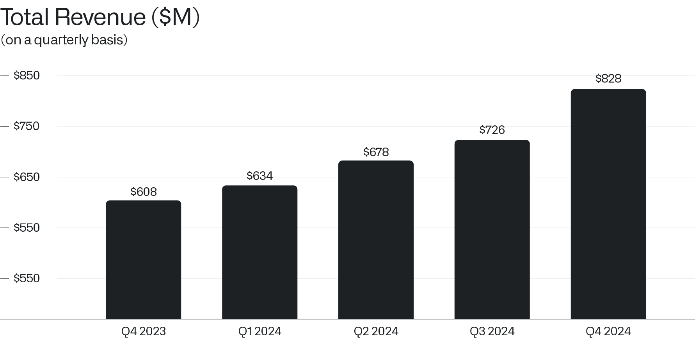
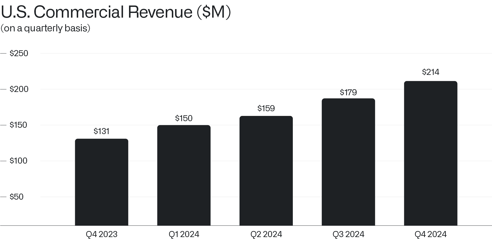

致股东的信
2025年2月3日
I.
我们仍处于一场将在未来数年乃至数十年间展开的革命的最初阶段，即第一幕的开端。
去年第四季度，我们的总收入达到创纪录的8.28亿美元，较上一季度的7.26亿美元增长14%，较上年同期增长36%。
这不是我们业务的渐进式进步或边际加速。这是一个全新的阶段。
我们在各个领域（包括商业和政府部门）看到的增长势头，是以往任何时候都无法比拟的。

我们所构建的业务如今已形成自身的内部动力与实力，拥有自己的内在生命力和不受约束的有机增长形式，我们所看到的产出远远超过了我们的投入。
一个软件巨头确实已然崛起。
二、
我们既拥有成熟在位者的产品和覆盖范围，又具备新兴初创企业的速度、增长和敏捷性。
这正是我们一直努力构建的最具杀伤力的组合，而未来如今正变得清晰而明确。
尤其是我们在美国的商业业务的强劲表现，持续令我们最热忱的支持者都感到惊叹。
2024年最后三个月，我们的美国收入同比增长52%，达到5.58亿美元。我们的美国业务全年收入为19亿美元，目前占我们总销售额的66%。
在美国，仅第四季度的商业收入就同比增长64%，环比增长20%，达到2.14亿美元。

第四季度，我们对美国政府合作伙伴（从情报服务到医疗保健工作）的销售额同比增长45%，达到3.43亿美元，推动全年销售额达到12亿美元。
三、
二十多年来，我们一直在为这一时刻勤勉地准备着。
对他人的怀疑和意见、对那些光鲜时髦的事物保持某种漠然，是绝对必要的。
但我们的耐心，以及有些人会公允地描述为我们对传统智慧的漠视，如今已得到回报。
我们的业绩——这一市场常常不确定自己想要奖励什么时用来评估价值的 admittedly 粗俗指标——如今甚至超出了我们最雄心勃勃的预期。
我们仍然记得早期潜在投资者们困惑的表情，当我们试图解释我们正在构建企业软件时——那时硅谷的闸门已经打开，资金涌向消费类小玩意、在线购物网站，以及其他旨在满足晚期资本主义心智需求的、相当容易被遗忘的实验。
当我们明确表示我们决心为美国国防和情报机构构建软件系统时，他们的表情更加困惑，眉头皱得更紧了。
曾有过一些艰难的年份。在消费互联网泡沫的鼎盛时期，我们就像一只逆风飞翔的怪鸟。
起初，认可来得缓慢，而最近，认可来得相当迅速。
不幸的是，无论是在商业还是政治领域，一个人的许多对手和敌对者只会对实力做出回应——那种不请求而是要求服从与顺从的赤裸裸的权力形式。
因此，我们构建了实力。
四、
然而，在试图推进一个机构或一个国家的利益时，进步的敌人是陷入自满和抛弃一切谦逊。
那种大功告成的感觉、那种确信历史已经终结的心态，或是对已被击败（往往只是暂时被击败）的对手或竞争者的轻蔑，都可能是致命的。
一个社会的技术自满往往映射出其政治选择与政治直觉。
我们对宽容与开放的坚守——我们的文化价值观——无疑具有感染力和说服力，但我们尚不能指望仅凭这些就能保护我们并取得胜利。
关于这一论点及其对当前时刻和我们所处十字路口的更完整阐述，请参见 《The Technological Republic》，该书即将出版。
正如塞缪尔·亨廷顿所写，西方的崛起并非“凭借其思想、价值观或宗教的优越性……而是凭借其在运用有组织暴力方面的优越性”。
他接着写道：“西方人常常忘记这一事实；非西方人则从未忘记。”

此致，

Alexander C. Karp
首席执行官兼联合创始人
Palantir Technologies Inc.
前瞻性声明
本信函包含1995年《私人证券诉讼改革法》“安全港”条款所界定的“前瞻性陈述”，包括但不限于有关我们的财务展望、产品开发及相关时间安排、分销和定价、我们软件平台的预期效益和应用、业务战略和计划（包括与我们的Artificial Intelligence Platform（“AIP”）相关的战略和计划、销售和营销工作、销售团队、合作伙伴关系和客户）、对我们业务的投资、市场趋势和市场规模、机遇（包括增长机遇）、我们对现有和潜在投资以及与各实体商业合同的预期、我们对宏观经济事件的预期、我们对股票回购计划的预期以及定位的陈述。这些前瞻性陈述是在首次发布之日作出的，基于当时的预期、估计、预测和推算以及管理层的信念和假设。“指引”、“预期”、“预计”、“应该”、“相信”、“希望”、“目标”、“预测”、“计划”、“目标”、“估计”、“潜在”、“预测”、“可能”、“将”、“或许”、“可以”、“打算”、“应”等词语以及这些词语的变体或否定形式和类似表述，旨在识别这些前瞻性陈述。前瞻性陈述受诸多风险和不确定性的影响，其中许多涉及超出我们控制范围的因素或情况。由于多种因素，我们的实际结果可能与前瞻性陈述中明示或暗示的结果存在重大差异，这些因素包括但不限于我们向美国证券交易委员会（“SEC”）提交的文件中详述的风险，包括我们截至2024年9月30日的财政季度的10-Q表格季度报告，以及我们可能不时向SEC提交的其他文件和报告，包括提供截至2024年12月31日的财政季度和年度收益新闻稿的8-K表格当前报告，以及我们截至2024年12月31日的财政年度的10-K表格年度报告。特别是，以下因素（除其他因素外）可能导致我们的结果与此类前瞻性陈述明示或暗示的结果存在重大差异：我们成功执行业务和增长战略的能力；我们的可用资金是否足以满足流动性需求；市场对我们平台、产品和服务总体上的需求；我们增加新客户数量和从客户获得收入的能力；我们能否将客户合同的全部或部分合同价值实现为收入，包括客户可选择的任何合同选项或受便利终止条款约束的合同期限；我们漫长且不可预测的销售周期；我们成功执行渠道销售和与第三方其他战略举措的能力；我们保留和扩大客户群的能力；我们的经营业绩和关键业务指标在未来期间按季度波动的可能性；我们业务的季节性；我们平台的实施过程可能复杂且耗时；我们成功开发和部署新技术以满足现有或潜在客户需求的能力；我们使平台和产品更易于安装、消费和使用的能力；我们维护和提升品牌及声誉的能力；随着业务增长以及追求业务和财务目标，我们维护和提升企业文化的能力；有关我们或我们领导层的新闻或社交媒体报道，包括但不限于呈现或依赖不准确、误导性、不完整或具有其他损害性信息的报道；近期或未来的全球宏观经济和地缘政治事件（如俄乌冲突和以色列冲突、利率上升、货币政策变化或外币波动）对我们公司或现有或潜在客户和合作伙伴的业务和运营的影响；在我们的平台中使用人工智能所引发的问题；以及我们或客户或第三方数据遭到的任何泄露或访问。
本信函中包含的前瞻性陈述仅代表我们在本信函发布之日的观点。我们预计后续事件和发展将导致我们的观点发生变化。我们不承担更新或修订任何前瞻性陈述的意图或义务，无论是基于新信息、未来事件还是其他原因。不应将本信函发布之日之后的任何日期的前瞻性陈述视为代表我们的观点。过往业绩并不必然预示未来结果。
其他说明
本信函可能包含某些非GAAP财务指标。我们对这些指标的定义可能与其他公司使用的定义不同，因此可比性可能有限。此外，其他公司可能不会发布这些或类似的指标。而且，这些指标存在一定的局限性，因为它们不包括我们合并经营报表中反映的某些费用的影响。因此，这些非GAAP财务指标应作为根据GAAP编制的指标的补充来考虑，而不能作为其替代品或孤立看待。我们通过提供这些非GAAP财务指标与最可比GAAP指标的调节表来弥补这些局限性，该调节表可在我们的投资者演示文稿和/或财报新闻稿中找到，这些材料可在我们的投资者关系网站（investors.palantir.com）上获取。我们鼓励投资者和其他人士完整地审阅我们的业务、经营业绩和财务信息，不要依赖任何单一财务指标，并将这些非GAAP财务指标与最直接可比的GAAP财务指标结合使用。
本函件可能包含基于独立行业出版物或其他公开信息以及基于我们内部来源的其他信息的统计数据、估计、预测和陈述。这些信息涉及许多假设和限制，请勿过度依赖这些估计。我们未独立核实这些行业出版物和其他公开信息中所含数据的准确性或完整性。因此，我们不对该等数据的准确性或完整性作出任何陈述，也不承诺在本函件日期之后更新该等数据。 本函件在讨论我们的业务时可能提及各种增长率。除非另有说明，这些增长率反映的是同比比较。
收到本信函即表示您确认，您将自行负责对市场及我们的市场地位进行评估，并将自行开展分析，且全权负责就所提供的信息（包括关于我们业务潜在未来表现的信息）形成自己的观点。